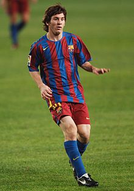

Introducción
Lionel Andrés Messi, nacido el 24 de junio de 1987 en Rosario, Argentina, es considerado uno de los mejores futbolistas de todos los tiempos. Desde muy pequeño, mostró un talento excepcional para el fútbol. A los 13 años, emigró a España para unirse a la cantera del FC Barcelona, que ayudó a financiar su tratamiento de crecimiento, una condición que enfrentó en su infancia.

Infancia y llegada a Barcelona
Messi debutó en el primer equipo del Barcelona en 2004, y rápidamente se consolidó como un jugador clave, destacando por su habilidad para eludir rivales, su precisión y visión de juego. Durante su carrera en el club catalán, ayudó al equipo a ganar múltiples títulos, incluyendo cuatro Champions League y diez títulos de La Liga, y estableció récords como máximo goleador de la historia del club y de la liga española.
Carrera en el FC Barcelona
Messi debutó en el primer equipo del Barcelona en 2004, ganando múltiples títulos, incluidos cuatro Champions League y diez títulos de La Liga. Rompió récords como máximo goleador del club y de la liga española.
Transición al Paris Saint-Germain
En 2021, debido a problemas financieros del Barcelona, Messi dejó el club y se unió al Paris Saint-Germain (PSG). A nivel de selecciones, Messi experimentó varios intentos frustrados por obtener títulos importantes con Argentina, pero en 2021 logró ganar la Copa América, y en 2022, coronó su carrera al ganar la Copa del Mundo en Qatar, uno de sus mayores logros y el título que lo consolidó como una leyenda en el fútbol argentino.

Carrera Internacional con Argentina
A pesar de varios intentos fallidos, Messi logró en 2021 ganar la Copa América con Argentina. En 2022, coronó su carrera al ganar la Copa del Mundo en Qatar, consolidándose como leyenda.
Influencia y Premios
Messi ha recibido numerosos premios, entre ellos siete Balones de Oro, y es conocido por su influencia global y su trabajo filantrópico.